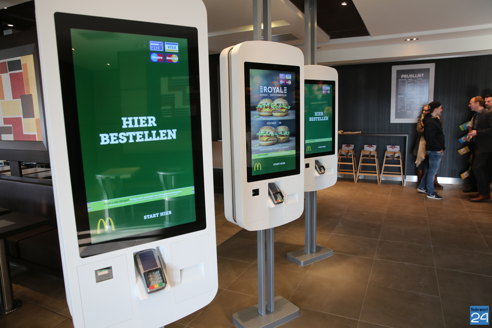
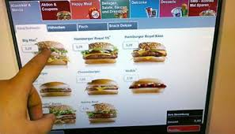

An Easy Order automatic ordering machine at McDonalds.
Er zijn mensen die snel en makkelijk eten willen gaan halen. McDonalds is een restaurant waarbij mensen op die manier kunnen eten. Het eten is lekker en mensen houden van de verschillende soorten dingen die ze hebben. Tegenwoordig willen ze op een andere manier hun eten halen. Er zijn automaten waarbij mensen eten kunnen bestellen bij de McDonalds.
Het systeem heeft mensen nodig die eten willen bestellen. Ze moeten op de scherm drukken om eten te bestellen. Het belangrijkste is dat mensen hun bestelling aan het systeem doorgeeft door een route in het systeem te volgen. Ze kunnen tijdens de route verschillende soorten eten en drinken bestellen, achteraf moeten ze betalen met hun kaart. Het systeem weet wat de klant wil en kan dat gaan verwerken.
Het systeem doet van te voren niks. Als er iemand op het scherm druk zal het systeem op een snelle en makkelijke manier het menu voor de klant laten zien. De klant kan zijn eigen keuze maken en dat doorgeven. Het systeem weet dit allemaal doordat de klant op het scherm heeft gedrukt. De bestelling van de klant wordt doorgegeven aan de kassa zodat de volgende klant zijn bestelling kan doorgeven.
De creature laat de klant op een beeld scherm het menu zien van de McDonalds. Het systeem probeer de klant aan te trekken om iets te bestellen. Om de klanten aan te trekken zal er op het scherm staan dat er snel bestel kan worden en dat het systeem makkelijk te gebruiken is. Klanten moeten op het scherm drukken zodat het systeem weet wat ze willen. Het menu wordt op een overzichtelijk manier laten zien zodat klanten zien wat er allemaal te bestellen is.


Het project van Somnox is een creature die helpt met slapen. Als mensen niet kunnen slapen kunnen ze dit creature gebruiken om in slaap te vallen. Het systeem maakt geluiden en trilt zodat mensen een fijn gevoel hebben als ze slapen. Dit systeem stimuleert mensen beter in slaap te vallen. Het reageer op de mens. Als het stil ligt dan gaat het trillen en geluid maken. De makers van het systeem zijn Julian Jagtenberg, Stijn Antonisse, Wouter Kooyman van Guldener en Job Engels. Het concept is bedacht op een universiteit en verder uitgewerkt tot een werkend apparaat.
De link van de site: https://meetsomnox.com/
De topic is erg interessant wat een creature is. Ik wist van te voren niet wat ik moest verwachten. Na de uitleg ervan heb ik zelf onderzoek gedaan naar Artificial Creatures. Er was niet zoveel over bekend en op het internet stond er niet echt een definitie. Ik dacht na hoe een creature emoties kan hebben en welke behoeftes ze hebben. Ik vergelijk het al snel met een mens, doordat het emoties en behoefte heeft. Maar het was interessant dat een creature dat ook kan hebben maar dan op een andere manier.
De toekomst van de artificial creatures zal nog groot worden. Er kan zoveel gemaakt worden met dit onderwerp. Mensen kunnen geholpen worden door deze creatures en ze kunnen misschien met mensen gaan communiceren. Ik denk dat de wereld anders zal gaan worden als er meer creatures gemaakt gaat worden. Mensen zoeken manieren om hun leven makkelijkere te maken, deze machines kunnen dat gaan doen. Het kan in de toekomst ook uit zichzelf gaan leren.